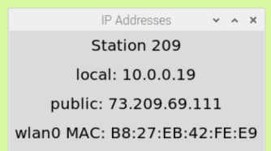
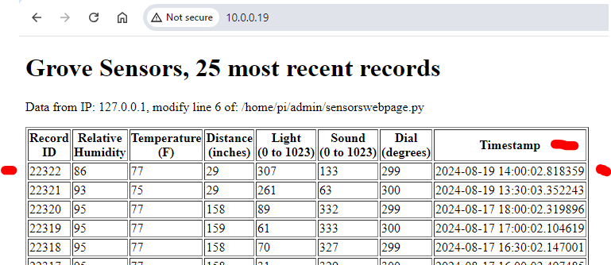
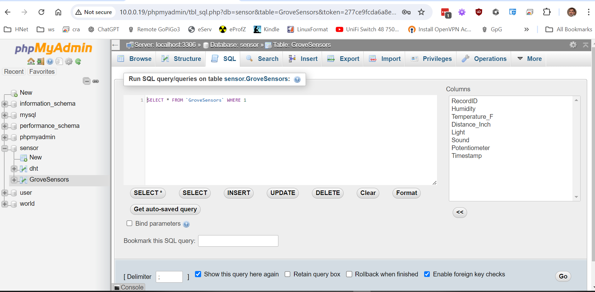

These exercises will guide you through the process of gathering Raspberry Pi sensor data in a MySQL/Maria database server on the Raspberry Pi.
Then you will use
a web browser to link over a network connection to the phpMyAdmin application on a remote Raspberry Pi to run a SQL statement to retrieve specific data.
More information on setting up MySQL is available online.
After completing this assignment you will be able to:
- Connect to remote Raspberry Pi to view MySQL sensor data
- Use phpMyAdmin to view a remote MySQL database
- Compose SQL statements to answer specific questions.
Prerequisites
Before doing this assignment review
IOT10- MySQL on Raspberry Pi,
IOT20-Linking Microsoft Access to MySQL using ODBC, and
IOT21-Sensor Data to MySQL.
You must be using a Raspberry Pi that has the following installed and configured:
- Maria/MySQL database (using mariadb, so install required mariadb connector
- phpMyAdmin
- GrovePi, Raspberry Pi with DHT11 temperature and humidity sensor
You must also be using a Windows computer with the following installed:
- Microsoft Access
- MySQL ODBC 8 ANSI driver (see IOT20)
This assignment reviews basic computer concepts that you will need in this course and throughout your career.
You are expected to have a working knowledge of SBC hardware and software.
If you do not understand how to use an item, perform a Google Search,
refer to the WSU Technology Knowledge Base, ask a teaching assistant, or ask the instructor.
8/19/24-rough outline
1. Determine the remote Raspberry Pi to connect via VNC.
Refer to the Calculator at the top of this assignment.
2. Determine the IP address of the station you will connect to.
Use the ip_list.html page on any Raspberry Pi in Somsen 301.
Or go look at the station and find the IP address in the upper right hand corner of the desktop:
 IP List of Addresses
IP List of Addresses
IP Address
3. use a web browser to connect to the your Target Station at
http://10.19.x.x/
The page that appears will show the 25 most recent data points.
Check to make sure the data appears reasonable.
Check that the most recent data is no more than 30 minutes old
Why are you doing this?
Sensor Data
4. Once you are sure the data appears reasonable and the target Rasbperry Pi is working corrrectly, next connect to the Target Station's instance of phpMyAdmin.
Open a web browser to:
http://TargetIP/phpmyadmin
The username and password are on the Raspberry Pi Desktop.
5. Login to phpMyAdmin, then go to the 'sensor' database and open the 'GroveSensors' table.
Make sure you can see data in the 'GroveSensors' table
Then click on the 'SQL' tab:
phpMyAdmin Sensor Data
Using phpMyAdmin, write a SQL statement that will return the complete record with the maximum temperature that the target station has encountered.
Enter your SQL statement below.
the code that reads the sensor data and writes it to the MySQL/MariaDB database.
(50) 1. Upload your screenshot to the 'IOT25' D2L Assignment Folder.
(10) 4. Assignment submission